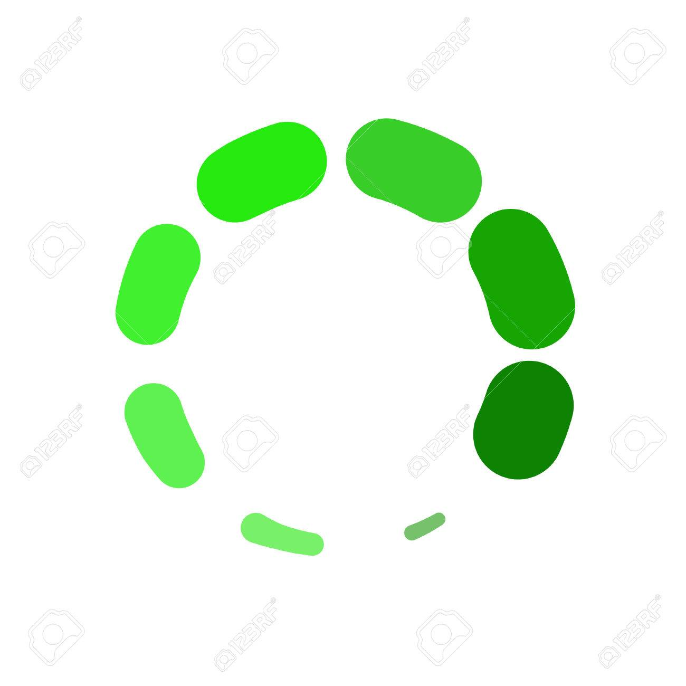

<div class="example-container" [class.example-is-mobile]="mobileQuery.matches">
  <mat-toolbar color="primary">
    <!-- <span [hidden]="!hideSideNav"> -->
    <button (click)="snav.toggle()" *ngIf="fillerNav.length> 0" mat-icon-button>
      <mat-icon>menu</mat-icon>
    </button>
    <!-- </span> -->
    
    <span (click)="goToPage()" class="main-title pointer">&nbsp;Ifelseloop &nbsp; &nbsp;</span>
    <button class="title-font" mat-button>Blogs</button>
    <span class="spacer"></span>
    <span class="spacer"></span>
    <button class="title-font" mat-button>About</button>
    <button routerLink="/hireme" class="title-font" mat-button>Hire me</button>
  </mat-toolbar>

  <mat-sidenav-container class="example-sidenav-container" [style.marginTop.px]="mobileQuery.matches ? 56 : 0">
    <mat-sidenav #snav [mode]="mobileQuery.matches ? 'over' : 'side'" [fixedInViewport]="mobileQuery.matches" fixedTopGap="56">
      <mat-nav-list>
        <a mat-list-item routerLink="{{nav.route}}" *ngFor="let nav of fillerNav">{{nav.name}}</a>
      </mat-nav-list>
    </mat-sidenav>

    <mat-sidenav-content>
      <router-outlet></router-outlet>
    </mat-sidenav-content>
  </mat-sidenav-container>

</div>
